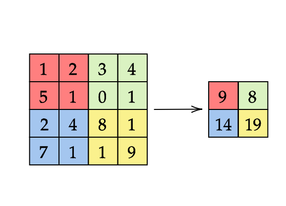

Lab 09 - Custom Rules For Differentiation
In many scientific and engineering applications, we often encounter mathematical expressions that require differentiation, and efficiently computing derivatives is a key challenge. The ChainRules.jl package in Julia provides a flexible framework to define custom derivative rules for complex functions and compositions. By writing your own rrules, you can optimize the computation of derivatives in your specific use case, making it easier to handle non-standard or complex operations that are not supported out-of-the-box.
Motivation
In our research, we often find that the bottleneck in experiments lies in the performance of basic functions. A common issue arises when working with loops and indexing, as Julia needs to track each index separately, which can slow down gradient computations significantly. However, if you understand your function well, you can write a custom rrule to bypass these limitations and achieve speedups of up to 1000 times. In this lab, you’ll experience this firsthand in one of the exercises you'll solve.
ChainRules ecosystem
ChainRulesCore.jl- It is a system for defining rules, and a collection of tangent typesChainRules.jl- a collection of rules for Julia Base and other standard libraries.ChainRulesTestUtils.jl- utilities for testing rules using finite differences
ChainRules is an AD-independent. The most widely used AD packages like Zygote.jl, Diffractor.jl, Enzyme.jl , and etc. automatically load rules or at least support using them.
Key distinction between rules
In a relationship $ y=f(x) $, where $ f $ is a function, computing $ y $ from $ x $ is known as the primal computation. ChainRules focuses on propagating tangents of primal inputs to outputs (with frule for forward-mode AD) and cotangents of outputs to inputs (with rrule for reverse-mode AD).
Forward-mode AD rule (frule)
The frule for $f$ encodes how to propagate the tangent of the primal input $\dot{x} = \frac{dx}{da}$ to the tangent of the primal output $\dot{y} = \frac{dy}{dx}$, i.e., $\dot{y} = \frac{dy}{dx}\dot{x}$.
The frule of function foo(args...; kwargs...) is
function frule((Δself, Δargs...), ::typeof(foo), args...; kwargs...)
...
return y, ∂Y
endwhere y = foo(args; kwargs...) is primal output, and ∂Y is the result of propagationg the input tangents Δself, Δargs....
Example of frule for sin(x) is:
function frule((_, Δx), ::typeof(sin), x)
return sin(x), cos(x) * Δx
endReverse-mode AD rule (rrule)
The rrule for $f$ encodes how to propagate the cotangent of the primal output $\bar{y} = \frac{da}{dy}$ to the tangent of the primal input $\bar{x} = \frac{da}{dx}$, i.e., $\bar{x} = \bar{y}\frac{dy}{dx}$.
The rrule of function foo(args...; kwargs...) is
function rrule(::typeof(foo), args...; kwargs...)
...
return y, pullback
endwhere y = foo(args; kwargs...) is primal output and pullback is a function to propagate the derivative information of foo with respect to args.
Example of rrule for sin(x) is:
function rrule(::typeof(sin), x)
sin_pullback(ȳ) = (NoTangent(), cos(x)' * ȳ)
return sin(x), sin_pullback
endTangent types
The types of tangents and cotangents depend on the types of the primals. However, sometimes our functions may have arguments which derivatives we can not compute or do not need. In that case, we represent it as NoTangent. ZeroTangent is used when tangent is equal to zero.
using ChainRulesCore, ChainRules, ChainRulesTestUtilsWrite custom rrule for following function $f(x,y) = x^2 + 3y$.
f1(x::T, y::T) where T<: Real = x^2 + 3*yf1 (generic function with 1 method)You can test your solution using
test_rrule(f1, randn(), randn())using Zygotejulia> gradient((a,b)->a^2 + 3*b, 2f0, 4f0)
(4.0f0, 3.0f0)
julia> gradient((a,b)->f1(a,b), 2f0, 4f0)
(4.0f0, 3.0f0)For the function in this exercise, writing a custom rrule isn’t necessary; the composition of existing rrules in the ChainRules package will be just as fast as your implementation. But in case, where you work for example with indexing in loops, writing your own rule make computations much faster and lower number of allocations.
Write your custom rrule for function mymaximum that finds maximal value of vector or matrix.
mymaximum(x) = maximum(x)mymaximum (generic function with 1 method)HINT
- note that typical evaluation of primal maximum within
rruledoes not have to be the same asmymaximum - try to not look for the same maximum twice
julia> test_rrule(mymaximum, randn(10));
Test Summary: | Pass Total Time
test_rrule: mymaximum on Vector{Float64} | 7 7 0.0s
julia> test_rrule(mymaximum, randn(10,10));
Test Summary: | Pass Total Time
test_rrule: mymaximum on Matrix{Float64} | 7 7 0.7sSum pooling on large matrices

To prepare for this task, we'll set up a few utility functions to simplify our implementation. There are multiple ways to approach this, but we'll focus on a straightforward setup for convenience.
First, we define the function create_range, which generates index ranges for pooling. We also define a AbstractUnitRange type, sortly AUR, for storing these ranges.
create_range(len::Int, step::Int) = [i:min(i + step - 1, len) for i in 1:step:len]
AUR = Vector{UnitRange{Int64}}
x = randn(10,10);
s1 = create_range(10, 3);
s2 = create_range(10, 2);5-element Vector{UnitRange{Int64}}:
1:2
3:4
5:6
7:8
9:10Next, we’ll compare our custom rule to a basic implementation of this pooling operation, pool_naive.
pool_native(x::AbstractArray, seg₁::AUR, seg₂::AUR) = [sum(x[sᵢ, sⱼ]) for sᵢ in seg₁, sⱼ in seg₂]pool_native (generic function with 1 method)Calling gradient on pool_naive shows that the output gradient is a matrix of ones with the same size as x, which confirms its correctness. Note that, since the pooling function outputs a matrix, we sum this output to compute derivatives with gradient. Because the derivative of addition is one, this result aligns with our expectations.
julia> gradient(a->sum(pool_native(a, s1, s2)), x)[1]ERROR: UndefVarError: `gradient` not defined in `Main` Suggestion: check for spelling errors or missing imports. Hint: a global variable of this name may be made accessible by importing Interpolations in the current active module Main Hint: a global variable of this name may be made accessible by importing Zygote in the current active module Main
The pool_naive function is concise, but we could write it in a more structured way, as shown in pool_sum below.
function pool_sum(x::AbstractArray, seg₁::AUR, seg₂::AUR)
y = similar(x, length(seg₁), length(seg₂))
for (i, sᵢ) in enumerate(seg₁)
for (j, sⱼ) in enumerate(seg₂)
y[i,j] = sum(x[sᵢ, sⱼ])
end
end
return y
endpool_sum (generic function with 1 method)The functions pool_naive and pool_sum perform the same operation with the same performance and memory usage. However, the structured approach in pool_sum will be more convenient when writing a custom rrule for this pooling operation.
Finish rrule function for sum pooling by implementing body of pool_sum_pullback(ȳ). After that test its functionality by test_rrule and measure speedup that you gaind using @benchmark on larger matrix (100x100).
function ChainRulesCore.rrule(::typeof(pool_sum), x::AbstractArray{T}, seg₁::AUR, seg₂::AUR) where T
y = pool_sum(x, seg₁, seg₂)
function pool_sum_pullback(ȳ)
...
end
return y, pool_sum_pullback
end
Hausdorff distance example
While sum pooling or finding the maximum may seem straightforward, combining concepts from these examples enables us to write efficient rrules for more complex tasks, such as computing Chamfer or Hausdorff distances. These metrics are highly relevant to our research, and creating custom rules for them significantly accelerated our experiments. Here is example of Hausdorff distance $d_{HD}(\mathbf{x},\mathbf{y}) = \max\big(h(\mathbf{x},\mathbf{y}), h(\mathbf{y},\mathbf{x}) \big)$, where $h(\mathbf{a},\mathbf{b}) = \max_{i} \min_{j} d(a_i, b_j)$
function HausdorffDistance(c)
d₁ = maximum(minimum(c, dims=1))
d₂ = maximum(minimum(c, dims=2))
maximum([d₁, d₂])
end
pool_naive(x::AbstractArray, seg₁::AUR, seg₂::AUR, f::Function=sum) = [f(x[sᵢ, sⱼ]) for sᵢ in seg₁, sⱼ in seg₂]
pool(x::AbstractArray, seg₁::AUR, seg₂::AUR, f::Function=sum) = [f(x[sᵢ, sⱼ]) for sᵢ in seg₁, sⱼ in seg₂]
function ChainRulesCore.rrule(::typeof(pool), x::AbstractArray, seg₁::AUR, seg₂::AUR, ::typeof(HausdorffDistance))
y, argmaxmins = forward_pool_hausdorff(x, seg₁, seg₂)
pullback = ȳ -> backward_pool_hausdorff(ȳ, x, seg₁, seg₂, argmaxmins)
return y, pullback
endImplement functions forward_pool_hausdorff and backward_pool_hausdorff. The key is to identify the indices within each segment that contribute to the Hausdorff distance calculation, then propagate gradients only through these indices in the backward pass. HINT
- The
forward_pool_hausdorfffunction should compute the Hausdorff distance by finding relevant indices within each segment. - Store these indices in a
Matrix{CartesianIndex{2}} - In backward function, first asign segment
o[sᵢ, sⱼ]to temporary variable, then propagateȳin this segment and then makeo[sᵢ, sⱼ]equal to temporary variable - In backwardpoolhausdorff, use the index matrix from the forward pass to propagate gradients only through the identified indices. We suggest, temporarily store each segment’s values and restore them after updating the gradient.
@benchmark gradient(a->sum(pool_naive(a, s1, s2, HausdorffDistance)), x)
@benchmark gradient(a->sum(pool(a, s1, s2, HausdorffDistance)), x)Rotary position embedding
The final example in this lab is Rotary position embedding (RoPE). Rotary Position Embedding (RoPE) is a method used in neural networks, especially transformers, to encode positional information within sequences. Unlike traditional position embeddings that add positional values to token embeddings, RoPE multiplies the embeddings with sinusoidal functions, allowing for the preservation of relative distances between tokens in a more natural way. This approach is efficient for capturing long-range dependencies, especially in models dealing with sequential data like text.
function rotary_embedding(x::AbstractMatrix, θ::AbstractVector)
d = size(x,1)
2*d == length(θ) && error("θ should be twice of x")
o = similar(x)
@inbounds for i in axes(x,2)
for (kᵢ, θₖ) in enumerate(θ)
k = 2*kᵢ - 1
sinᵢ, cosᵢ = sincos(i * θₖ)
o[k,i] = x[k,i] * cosᵢ - x[k+1,i] * sinᵢ
o[k+1,i] = x[k+1,i] * cosᵢ + x[k,i] * sinᵢ
end
end
o
end
function ∂rotary_embedding(ȳ, x::AbstractMatrix, θ::AbstractVector)
x̄ = similar(x)
θ̄ = similar(θ)
θ̄ .= 0
@inbounds for i in axes(x,2)
for (kᵢ, θₖ) in enumerate(θ)
k = 2*kᵢ - 1
sinᵢ, cosᵢ = sincos(i * θₖ)
x̄[k,i] = ȳ[k,i] * cosᵢ + ȳ[k+1,i] * sinᵢ
x̄[k+1,i] = -ȳ[k,i] * sinᵢ + ȳ[k+1,i] * cosᵢ
θ̄[kᵢ] += i* (- ȳ[k,i] * x[k,i] * sinᵢ - x[k+1,i] * ȳ[k,i] * cosᵢ
- x[k+1,i] * ȳ[k+1,i] *sinᵢ + x[k,i] * ȳ[k+1,i] * cosᵢ)
end
end
x̄, θ̄
end
function ChainRulesCore.rrule(::typeof(rotary_embedding), x::AbstractMatrix, θ::AbstractVector)
y = rotary_embedding(x, θ)
function rotary_pullback(ȳ)
f̄ = NoTangent()
x̄, θ̄ = ∂rotary_embedding(ȳ, x, θ)
return f̄, x̄, θ̄
end
return y, rotary_pullback
end